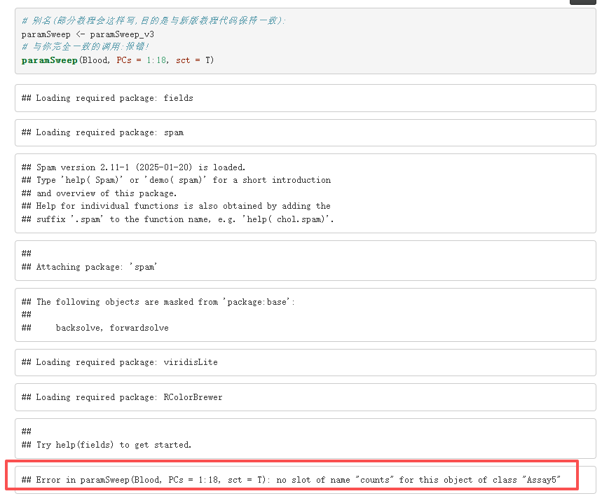
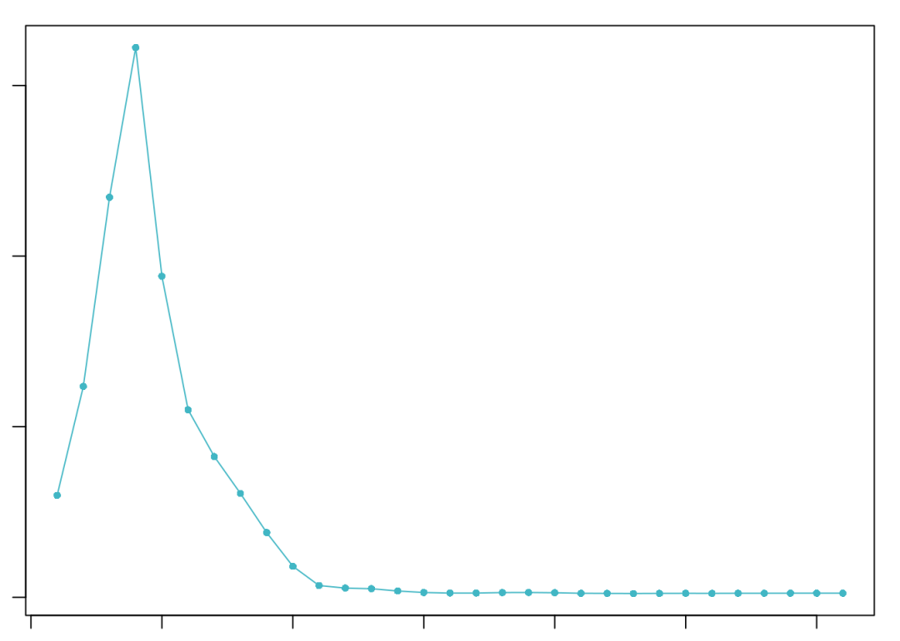
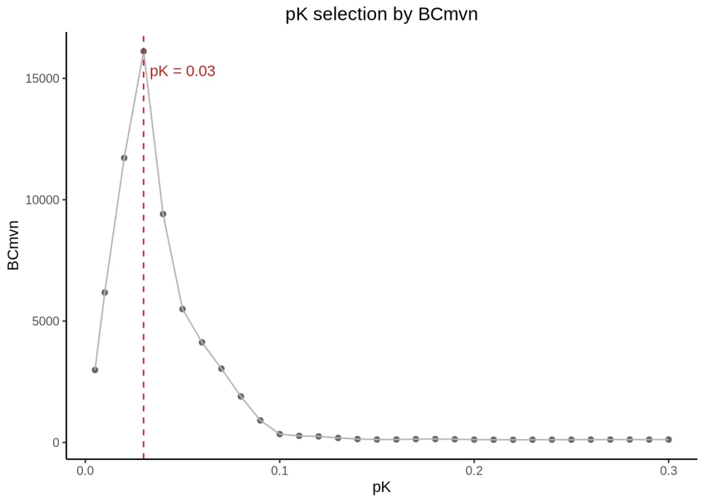
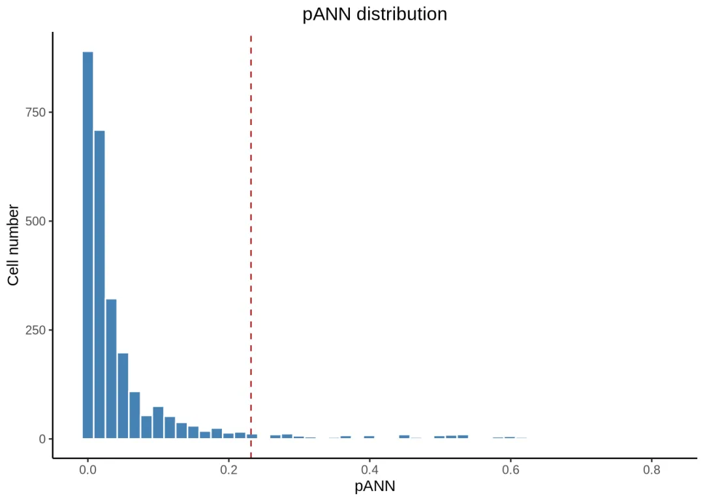
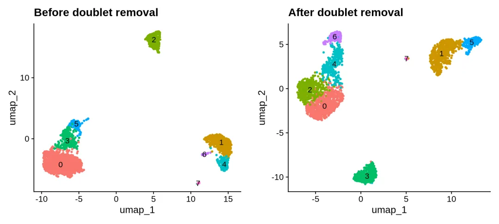
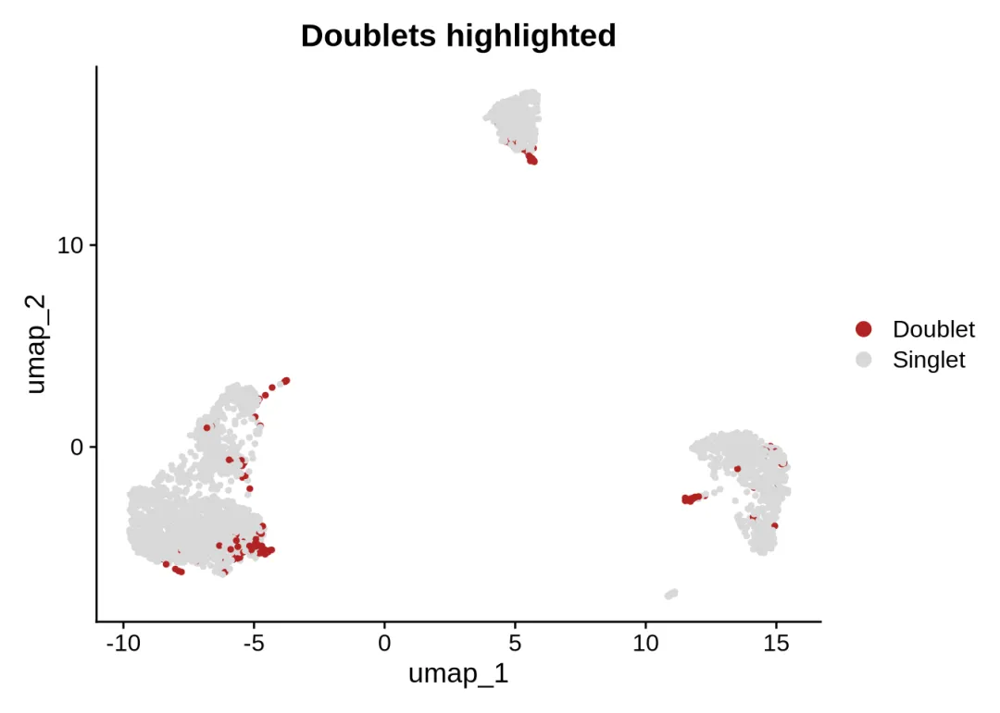
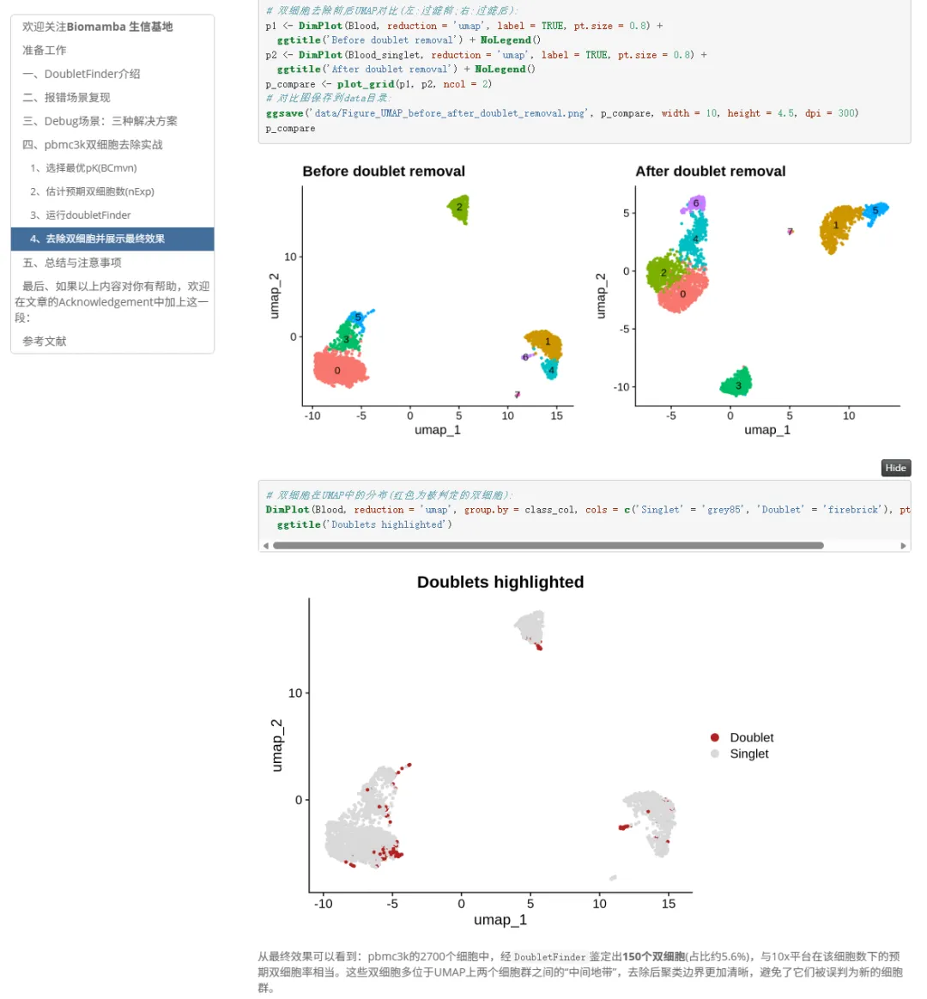

Seurat升级V5的阵痛还在蔓延
原文：https://mp.weixin.qq.com/s?__biz=MzAwMzIzOTk5OQ==&mid=2247541846&idx=1&sn=610b2dd291ba97466ca70c852c82c5b3&chksm=9b3c5d06ac4bd410024f708c8ddf56f5aabd7e2d9773d848124d94f691a6665c09ea2628b3d7#rd 合集：答读者问
一、Seurat升级带来的DoubletFinder报错
SeuratV4升级V5算是个单细胞史上的大事件，函数和数据存储对象框架迎来了巨巨巨巨大改动。这一改不但影响原有的Seurat代码，还会影响其它依赖Seurat或其对象开发的包，例如CellChat、NicheNetR、monocle3、slingshot、singleR、scType、SoupX、UCell等等等等，它们都或多或少能够直接处理Seurat对象或接受Seurat对象转化为自己的分析数据对象。我们去除双细胞用到的DoubletFinder就是其中之一，如果你用的是V2.0.6或之前的版本，但Seurat却是V5的话，那么你大概率在运行parampSeep时会遇到这个报错。

问题是怎么发生的——DoubletFinder与Seurat版本的兼容性Seurat在v5版本 对数据结构进行了重大改动：assay类由Assay升级为Assay5，表达矩阵的存储方式由传统的slot(counts/data/scale.data)变为layers(如counts、data、scale.data可以按样本拆分为counts.Sample1、counts.Sample2…)。而DoubletFinder旧版本(CRAN归档版v2.0.4以及2023-11-21之前的GitHub版本)的源码中仍然直接通过seu@assays$RNA@counts这样的方式访问slot，在Assay5对象上自然就会报错。
二、三种Debug解决方案
Debug场景：三种解决方案
方案一：Assay5转Assay(对象“降级”，不换包)
最省事的办法：把Assay5转成v4风格的Assay类，旧版代码访问@counts时自然就能找到slot了。Seurat官方提供了as()转换方法，一行代码即可完成：
# 复制一份对象用于演示(不影响原对象):
Blood_conv <-Blood# 将RNA assay由Assay5转换为v4的Assay类(Seurat官方提供的as方法,自动合并layers):
Blood_conv[['RNA']] <-as(Blood_conv[['RNA']], Class ='Assay')
## Warning: Assay RNA changing from Assay5 to Assay
# 查看转换结果:类变成了Assay,counts成为真正的slot:
class(Blood_conv[['RNA']])
## [1] "Assay"## attr(,"package")## [1] "SeuratObject"
# 转换后slot访问不再报错:
class(slot(Blood_conv[['RNA']], 'counts'))
## [1] "dgCMatrix"## attr(,"package")## [1] "Matrix"
现在旧版paramSweep_v3就能正常在转换后的对象上运行了：
# 设置随机种子(生成人工双细胞涉及抽样,固定种子保证可重复):set.seed(20260908)# 旧版paramSweep_v3在"降级"后的对象上运行(隐藏冗长的进度信息):invisible(capture.output( sweep.res.list_conv <-paramSweep_v3(Blood_conv, PCs =1:18, sct =FALSE)))
# 查看扫描结果(共6个pN × 一批pK,每个元素是各细胞的pANN向量):
length(sweep.res.list_conv)
## [1] 186
head(sweep.res.list_conv[[1]])
## pANN## AAACATACAACCAC-1 0.14285714## AAACATTGAGCTAC-1 0.00000000## AAACATTGATCAGC-1 0.00000000## AAACCGTGCTTCCG-1 0.00000000## AAACCGTGTATGCG-1 0.00000000## AAACGCACTGGTAC-1 0.07142857
# 汇总扫描结果并选择最优pK:
sweep.stats_conv <-summarizeSweep(sweep.res.list_conv, GT =FALSE) # GT:是否有金标准双细胞注释
## Loading required package: KernSmooth
## KernSmooth 2.23 loaded## Copyright M. P. Wand 1997-2009
## Loading required package: ROCR
bcmvn_conv <-find.pK(sweep.stats_conv) # 计算BCmvn选择最优pK

## NULL
# 最优pK即BCmvn最大值对应的pK:bcmvn_conv[which.max(bcmvn_conv$BCmetric), c('pK', 'BCmetric')]
## pK BCmetric## 4 0.03 16114.09
这个方案不需要更换DoubletFinder版本 ，一行转换代码即可让旧版继续工作，且该思路适用于所有 依赖v4 Assay slot的旧工具(如部分老版绘图包、轨迹分析包等)。缺点是转换后对象不再是纯正的v5结构(分层layer被合并)，且每一份新数据都要记得转换 。
方案二：自己动手修改源码(理解原理)
既然报错只是@counts一处slot访问的问题，我们也可以自己写一个修复版函数：把slot访问替换为v5官方的LayerData()函数。修复版如下：
# 方案二:自定义修复版paramSweep# 与旧版paramSweep_v3的差别只有一处——用LayerData()替代@counts的slot访问(★标注行):
paramSweep_fix <-function(seu, PCs =1:10, sct =FALSE, num.cores =1) {# pK与pN的扫描范围(与官方一致):
pK <-c(0.0005, 0.001, 0.005, seq(0.01, 0.3, by =0.01))
pN <-seq(0.05, 0.3, by =0.05)# 移除过小的pK(细胞数不足时无法计算k近邻): min.cells <-round(nrow(seu@meta.data)/(1-0.05) -nrow(seu@meta.data))
pK.test <-round(pK *min.cells)
pK <-pK[which(pK.test >=1)]# 读取原始预处理参数(v5中命令同样保存在@commands中):
orig.commands <-seu@commands# 若细胞数超过10000,抽样10000个细胞用于扫描(官方策略,提高效率):
*
-
-
-
-
-
-
-
-
-
-
-
-
-
-
-
-
-
-
-
-
-
-
-
-
-
-
-
-
-
-
-
-
-
-
-
-
- *
-
-
-
-
-
-
-
-
-
-
-
-
-
-
-
-
-
-
-
-
-
-
-
-
-
-
-
-
-
-
-
-
-
-
-
# DoubletFinder适配Seurat v5 LayerData版本if (nrow(seu@meta.data) > 10000) { real.cells <- rownames(seu@meta.data)[sample(1:nrow(seu@meta.data), 10000, replace = FALSE)] data <- LayerData(seu, assay = 'RNA', layer = 'counts')[, real.cells] # Seurat v5 获取counts层 n.real.cells <- ncol(data)} else { real.cells <- rownames(seu@meta.data) data <- LayerData(seu, assay = 'RNA', layer = 'counts') # Seurat v5 替代 seu@assays$RNA@counts n.real.cells <- ncol(data)}# 逐pN生成人工双细胞并计算pANN，复用DoubletFinder内部函数 parallel_paramSweep_v3output2 <- lapply( as.list(1:length(pN)), FUN = DoubletFinder:::parallel_paramSweep_v3, n.real.cells, real.cells, pK, pN, data, orig.commands, PCs, sct)# 将结果整理为列表sweep.res.list <- list()list.ind <- 0for (i in 1:length(output2)) { for (j in 1:length(output2[[i]])) { list.ind <- list.ind + 1 sweep.res.list[[list.ind]] <- output2[[i]][[j]] }}name.vec <- NULLfor (j in 1:length(pN)) { name.vec <- c(name.vec, paste('pN', pN[j], 'pK', pK, sep = '_'))}names(sweep.res.list) <- name.vecreturn(sweep.res.list)
# 直接在v5对象上运行修复版函数(不转换、不换包):
set.seed(20260908)
invisible(capture.output( sweep.res.list_fix <-paramSweep_fix(Blood, PCs =1:18, sct =FALSE)))
# 修复版运行成功,结果与官方一致:length(sweep.res.list_fix)
## [1] 186
这个方案帮助你理解报错本质 ——v5只是把slot换成了layer，读取方式相应地从@访问改为LayerData()函数。事实上新版官方代码用的正是这个思路(用SeuratObject::Version()判断对象版本，v5用LayerData()、旧版用GetAssayData())，本方案相当于手动实现了官方的修复。
方案三：升级到新版DoubletFinder(推荐)
前两个方案治标，升级包才是治本 。2023-11-21起官方GitHub版本已适配Seurat v5(函数名去掉_v3)，2025-02起现维护者对v5的适配进一步完整。我们直接重装新版：
# 升级安装最新GitHub版(force = TRUE强制覆盖旧版):# 注意:必须先卸载已加载的旧版命名空间,否则R会拒绝覆盖安装("package in use"):
detach('package:DoubletFinder', unload =TRUE)
remotes::install_github('chris-mcginnis-ucsf/DoubletFinder', dependencies =FALSE, upgrade ='never', force =TRUE, quiet =TRUE)# 删除前面报错场景中定义的旧版函数别名(否则会遮蔽新版函数):
rm(paramSweep)
# 重新加载新版:
suppressMessages(library(DoubletFinder))
# 新版版本号(2.0.6)与函数名(无_v3后缀):
cat('DoubletFinder版本:', as.character(packageVersion('DoubletFinder')), '\n')
## DoubletFinder版本: 2.0.6
sort(getNamespaceExports('DoubletFinder'))
## [1] "doubletFinder" "find.pK" "modelHomotypic" "paramSweep" ## [5] "summarizeSweep"
查看新版源码中与旧版对应的关键行(官方是如何修复的)：
# 新版paramSweep源码关键行:用版本判断+LayerData()兼容v5:
cat(grep('Version|LayerData|GetAssayData', deparse(DoubletFinder::paramSweep), value =TRUE), sep ='\n')
## if (SeuratObject::Version(seu) >= "5.0") {## counts <- LayerData(seu, assay = "RNA", layer = "counts")## counts <- GetAssayData(object = seu, assay = "RNA", slot = "counts")
在v5对象上直接 运行新版paramSweep，无需任何转换：
# 新版paramSweep直接在v5对象上运行(sct = FALSE):set.seed(20260908)invisible(capture.output( sweep.res.list <-paramSweep(Blood, PCs =1:18, sct =FALSE)))
length(sweep.res.list)
## [1] 186
对应你报错调用中的paramSweep(..., sct = T)，我们再补一个SCTransform流程 的验证(sct = T要求原始分析用SCTransform预处理)：
# sct = T场景:用SCTransform重新预处理一份对象(SCTransform自带标准化与高变基因选择):
Blood_sct <-SCTransform(Blood, verbose =FALSE)
Blood_sct <-RunPCA(Blood_sct, npcs =30, verbose =FALSE)# 新版paramSweep在SCT对象上运行(sct = T;num.cores = 6并行加速):
invisible(capture.output( sweep.res.list_sct <-paramSweep(Blood_sct, PCs =1:18, sct = T, num.cores =6)))
# sct = T同样运行成功:
length(sweep.res.list_sct)
## [1] 186
三、完整实战
pbmc3k双细胞去除实战
面按官方标准流程完成pbmc3k的双细胞去除。上一节方案三中我们已经完成了参数扫描(sweep.res.list)，直接继续：
1、选择最优pK(BCmvn)
# 汇总扫描结果(无金标准,GT = FALSE):
sweep.stats <-summarizeSweep(sweep.res.list, GT =FALSE)
head(sweep.stats)
## pN pK BCreal
## 1 0.05 0.005 0.9350510
## 2 0.05 0.01 0.9339655
## 3 0.05 0.02 0.9273848
## 4 0.05 0.03 0.9193688
## 5 0.05 0.04 0.9142656
## 6 0.05 0.05 0.9155618
# find.pK:计算各pK的均值-方差归一化双峰系数(BCmvn),选择最大值对应的pK:
bcmvn <-find.pK(sweep.stats)

## NULL
# 展示前几个pK(按BCmvn降序):
head(bcmvn[order(bcmvn$BCmetric, decreasing =TRUE), ], 10)
## ParamID pK MeanBC VarBC BCmetric
## 4 4 0.03 0.9082464 5.636350e-05 16114.088
## 3 3 0.02 0.9108131 7.769318e-05 11723.205
## 5 5 0.04 0.9050636 9.616875e-05 9411.202
## 2 2 0.01 0.9100652 1.472901e-04 6178.727
## 6 6 0.05 0.9038305 1.644325e-04 5496.665
## 7 7 0.06 0.9015231 2.184894e-04 4126.165
## 8 8 0.07 0.8973457 2.949828e-04 3042.027
## 1 1 0.005 0.9076393 3.038645e-04 2986.987
## 9 9 0.08 0.8916227 4.699673e-04 1897.202
## 10 10 0.09 0.8799205 9.680828e-04 908.931
# 提取最优pK(BCmvn最大的pK):
optimal_pK <-as.numeric(as.character(bcmvn$pK[which.max(bcmvn$BCmetric)]))
optimal_pK
## [1] 0.03
# 绘制BCmvn随pK变化的曲线(峰值即最优pK),图片保存到data目录:
p_bcmvn <-ggplot(bcmvn, aes(x =as.numeric(as.character(pK)), y = BCmetric)) +
geom_point(color ='grey40') +
geom_line(color ='grey70') +
geom_vline(xintercept = optimal_pK, linetype ='dashed', color ='firebrick') +
annotate('text', x = optimal_pK +0.02, y =max(bcmvn$BCmetric) *0.95,
label =paste0('pK = ', optimal_pK), color ='firebrick') +
labs(x ='pK', y ='BCmvn', title ='pK selection by BCmvn') +
theme_classic() +theme(plot.title =element_text(hjust =0.5))
ggsave('data/Figure_bcmvn_pK_selection.png', p_bcmvn, width =6, height =4, dpi =300)
p_bcmvn

2、估计预期双细胞数(nExp)
# modelHomotypic:根据细胞类型注释估计同型双细胞(转录相似细胞形成的双细胞)的比例:
# DoubletFinder对同型双细胞不敏感,需要校正预期双细胞数:
annotations <-as.character(Blood$seurat_clusters) # 聚类结果作为细胞类型注释
homotypic.prop <-modelHomotypic(annotations)
homotypic.prop
## [1] 0.2593514
# 预期双细胞数:官方demo假设7.5%的双细胞率(10x Chromium平台经验值);
# 实际应参照10x官方multiplet rate表按自己的上样细胞数估计,可参考官方issue#76的讨论:
nExp_poi <-round(0.075*ncol(Blood)) # 泊松估计的预期双细胞数
nExp_poi
## [1] 202
# 经同型双细胞比例校正后的预期双细胞数:
nExp_poi.adj <-round(nExp_poi *(1-homotypic.prop))
nExp_poi.adj
## [1] 150
3、运行doubletFinder
新版函数名为doubletFinder(旧版为doubletFinder_v3)，运行两次：第一次计算pANN，第二次用校正后的nExp直接基于pANN分类：
# 第一次运行:计算每个细胞的pANN(该步会再次生成人工双细胞,耗时较长):
set.seed(20260908)
Blood <-doubletFinder(Blood, # 输入Seurat对象
PCs =1:18, # 使用的主成分
pN =0.25, # 人工双细胞比例(官方默认0.25)
pK = optimal_pK, # 上一步BCmvn选出的最优pK
nExp = nExp_poi, # 预期双细胞数
reuse.pANN =NULL, # 是否复用已有的pANN(第一次运行设为NULL)
sct =FALSE) # 是否为SCTransform流程
# 查看新增的meta.data列(pANN与第一次分类结果):
grep('pANN|DF.classifications', colnames(Blood@meta.data), value =TRUE)
## [1] "pANN_0.25_0.03_202" "DF.classifications_0.25_0.03_202"
# 第二次运行:复用第一次的pANN,用同型校正后的nExp重新分类(节省计算):
pANN_col <-grep('pANN', colnames(Blood@meta.data), value =TRUE)
Blood <-doubletFinder(Blood, PCs =1:18, pN =0.25, pK = optimal_pK,
nExp = nExp_poi.adj, # 校正后的预期双细胞数
reuse.pANN = pANN_col, # 复用第一次运行得到的pANN列
sct =FALSE)
# 双细胞鉴定结果列(DF.classifications_pN_pK_nExp;两次运行各有一列,取最后校正后的那列):
class_col <-tail(grep('DF.classifications', colnames(Blood@meta.data), value =TRUE), 1)
class_col
## [1] "DF.classifications_0.25_0.03_150"
table(Blood@meta.data[, class_col])
##
## Doublet Singlet
## 150 2550
# 查看pANN的分布(红色虚线为校正后nExp对应的pANN阈值):
pANN_threshold <-sort(Blood@meta.data[, pANN_col], decreasing =TRUE)[nExp_poi.adj]
p_pann <-ggplot(Blood@meta.data, aes(x = .data[[pANN_col]])) +
geom_histogram(bins =50, fill ='steelblue', color ='white') +
geom_vline(xintercept = pANN_threshold, linetype ='dashed', color ='firebrick') +
labs(x ='pANN', y ='Cell number', title ='pANN distribution') +
theme_classic() +theme(plot.title =element_text(hjust =0.5))
ggsave('data/Figure_pANN_distribution.png', p_pann, width =6, height =4, dpi =300)
p_pann

4、去除双细胞并展示最终效果
# 保留被判定为单细胞(Singlet)的细胞:
Blood_singlet <-subset(Blood, cells =rownames(Blood@meta.data)[Blood@meta.data[, class_col] == 'Singlet'])
# 去除双细胞前后的细胞数对比:
cat('过滤前细胞数:', ncol(Blood), '\n')
## 过滤前细胞数: 2700
cat('过滤后细胞数:', ncol(Blood_singlet), '\n')
## 过滤后细胞数: 2550
cat('去除双细胞数:', ncol(Blood) -ncol(Blood_singlet), '\n')
## 去除双细胞数: 150
# 保存过滤后的对象供后续分析使用:
saveRDS(Blood_singlet, 'data/Blood_singlet.rds')
# 对过滤后的对象重新聚类(看看双细胞去除后聚类是否更清晰):
Blood_singlet <-NormalizeData(Blood_singlet, verbose =FALSE)
Blood_singlet <-FindVariableFeatures(Blood_singlet, selection.method ='vst', nfeatures =2000, verbose =FALSE)
Blood_singlet <-ScaleData(Blood_singlet, verbose =FALSE)
Blood_singlet <-RunPCA(Blood_singlet, features =VariableFeatures(Blood_singlet), verbose =FALSE)
Blood_singlet <-FindNeighbors(Blood_singlet, dims =1:18)
Blood_singlet <-FindClusters(Blood_singlet, resolution =0.5)
## Modularity Optimizer version 1.3.0 by Ludo Waltman and Nees Jan van Eck
##
## Number of nodes: 2550
## Number of edges: 111377
##
## Running Louvain algorithm...
## Maximum modularity in 10 random starts: 0.8630
## Number of communities: 8
## Elapsed time: 0 seconds
Blood_singlet <-RunUMAP(Blood_singlet, dims =1:18)
# 双细胞去除前后UMAP对比(左:过滤前;右:过滤后):
p1 <-DimPlot(Blood, reduction ='umap', label =TRUE, pt.size =0.8) +
ggtitle('Before doublet removal') +NoLegend()
p2 <-DimPlot(Blood_singlet, reduction ='umap', label =TRUE, pt.size =0.8) +
ggtitle('After doublet removal') +NoLegend()
p_compare <-plot_grid(p1, p2, ncol =2)
# 对比图保存到data目录:
ggsave('data/Figure_UMAP_before_after_doublet_removal.png', p_compare, width =10, height =4.5, dpi =300)
p_compare

# 双细胞在UMAP中的分布(红色为被判定的双细胞):
DimPlot(Blood, reduction ='umap', group.by = class_col, cols =c('Singlet' = 'grey85', 'Doublet' = 'firebrick'), pt.size =0.8) +
ggtitle('Doublets highlighted')

从最终效果可以看到：pbmc3k的2700个细胞中，经DoubletFinder鉴定出150个双细胞(占比约5.6%)，与10x平台在该细胞数下的预期双细胞率相当。这些双细胞多位于UMAP上两个细胞群之间的“中间地带”，去除后聚类边界更加清晰，避免了它们被误判为新的细胞群。
四、资料下载
完整演示手册下载

通过网盘分享的文件：SeuratV5_DoubletFinder双细胞去除debug
链接: https://pan.baidu.com/s/13iB3ZwquTDIU9libdsEEzA
提取码: jtvs

欢迎交流

 留一个领取资料、开箱即用的单细胞分析镜像的助手[Biomamba_yunying]，方便各位随时交流。同时我们也构建了交流群矩阵，欢迎大家一起讨论。
留一个领取资料、开箱即用的单细胞分析镜像的助手[Biomamba_yunying]，方便各位随时交流。同时我们也构建了交流群矩阵，欢迎大家一起讨论。
 您点的每个赞和在看，我都认真当成了喜欢
您点的每个赞和在看，我都认真当成了喜欢